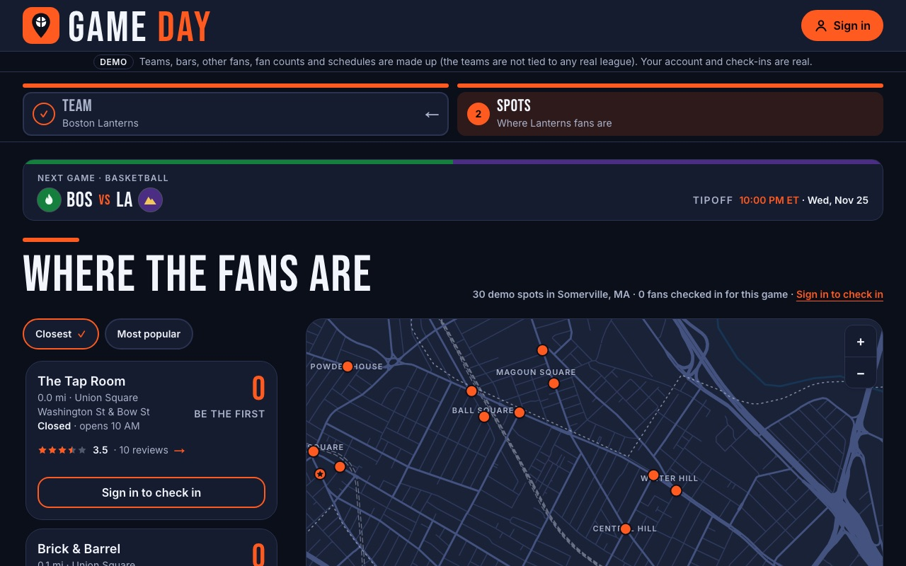
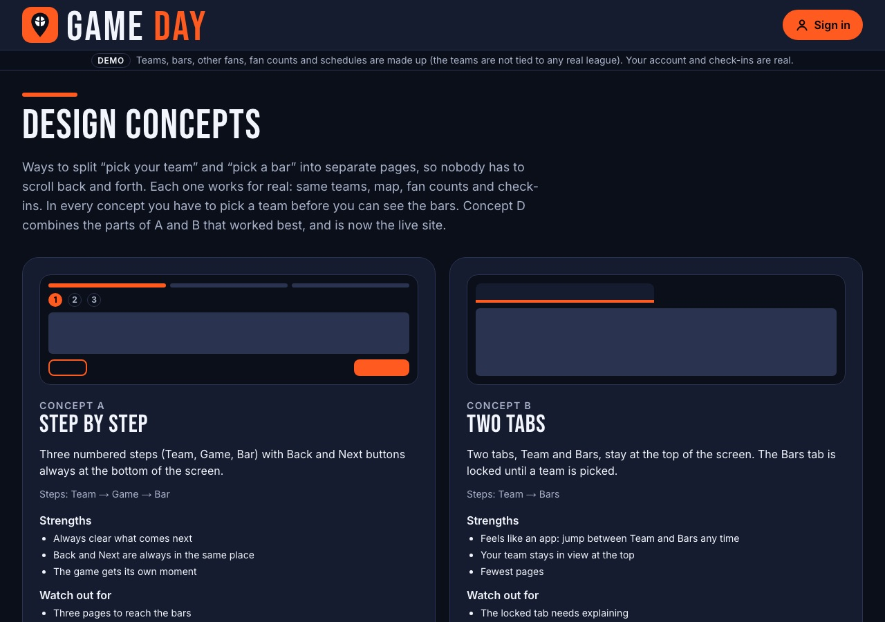
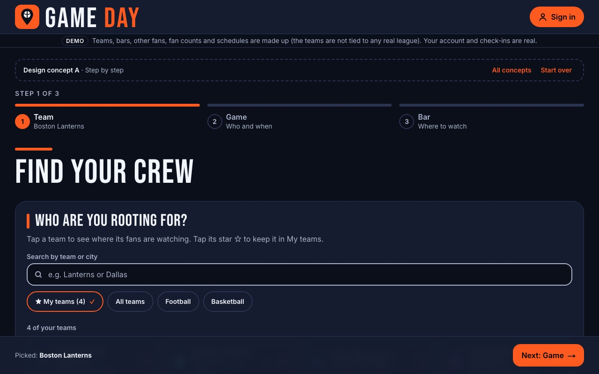
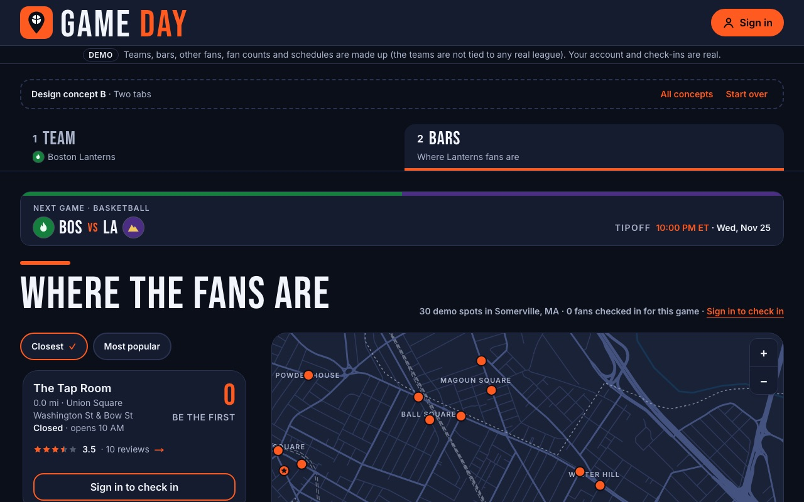
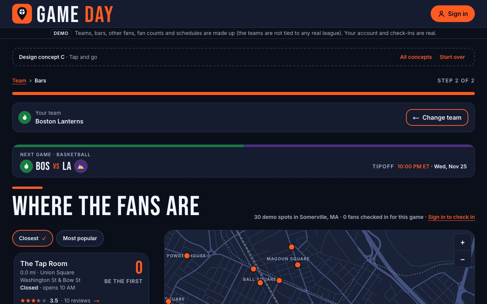
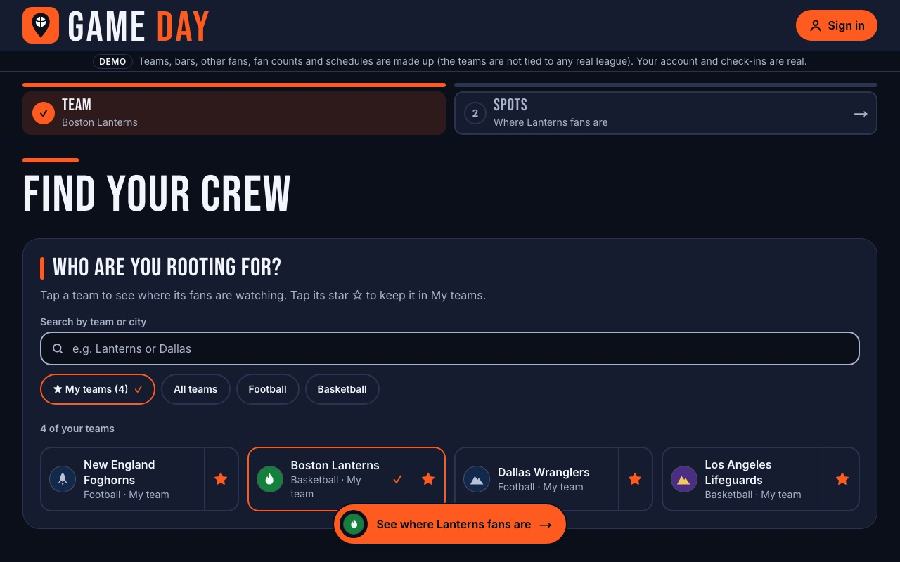
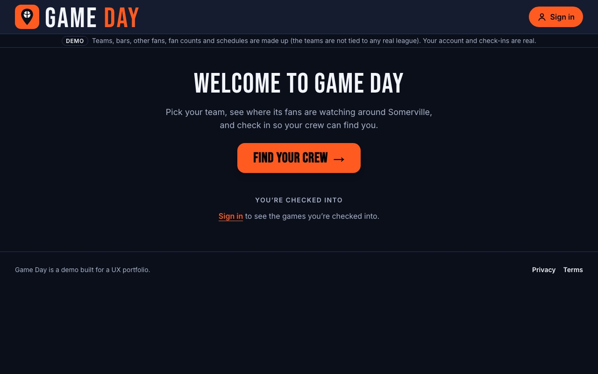
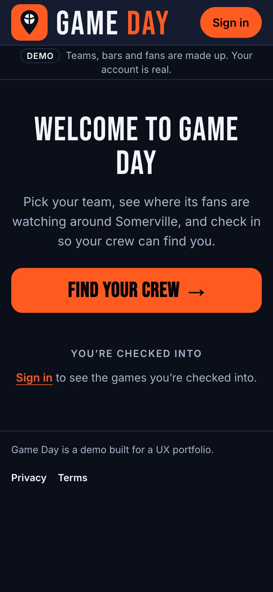
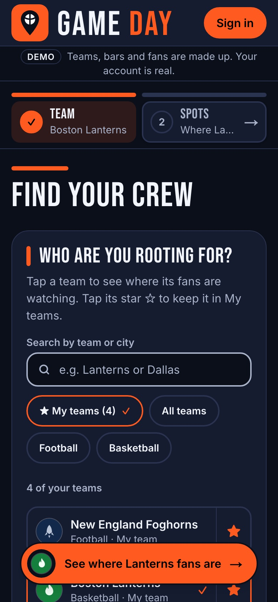
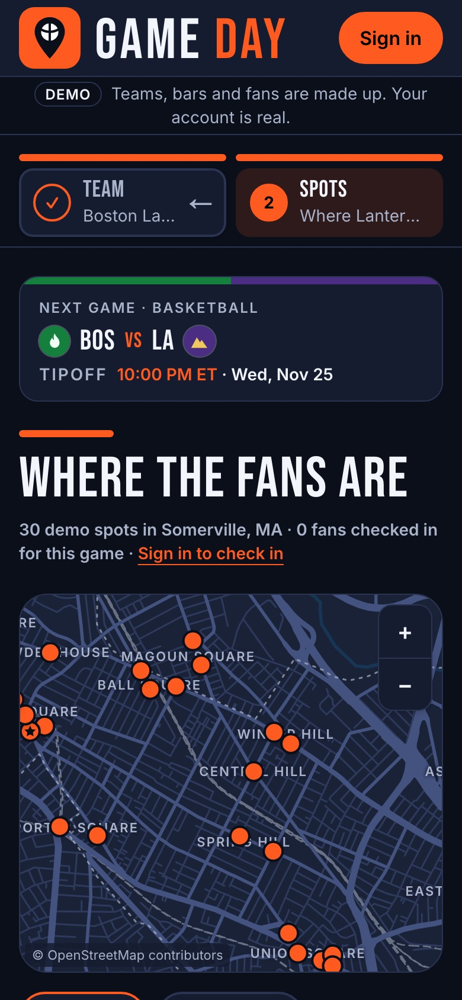

UX designer; I directed Claude Code, which wrote the code
// timeline
November 2026; first working version in about two days
// platform
Web app for desktop and phone
// built with
Claude Code, Next.js, Firestore, Google Cloud Run

01 · the problem
Watching a game is more fun in a crowd. Finding that crowd is guesswork.
A fan who moved to a new city, follows an out-of-town team, or has friends who don't care about their sport has no easy way to know where fellow fans gather. Bars advertise TVs and wing specials, not who will be there. The answer lives in scattered group chats, forum threads and word of mouth.
The solution
Pick your team, see its next game, and see a live count of fans checked in at each spot, on a list and a map. Check in yourself and the count goes up for everyone.
Who it's for
Fans who want company for a game: transplants, newcomers, and fans of a team their friends don't follow.
Regulars and groups deciding whether their usual spot will be lively, or where to meet.
02 · my approach
Build first, then test like a designer.
I didn't start with formal research. I started with an idea and went straight into building it with Claude Code.
Building first meant every design question could be answered with a working screen instead of a static mockup. To keep that honest, I wrote down every assumption the design depended on, turned each one into a question for user testing, and reviewed the running prototype with the same methods I'd use on any design.
AssumeWrite each assumption down with the decision it drives.
BuildA working prototype, one feature at a time.
EvaluateA heuristic review of every screen.
ListenInformal feedback from someone trying it.
CompareBuild competing concepts for real, side by side.
RefineRounds of small, reasoned changes.
03 · assumptions log
Research I owe, written down as I went.
With no time for research, every decision rests on an assumption. Logging them keeps the risk visible, and each one is ready to check in the first round of usability testing.
assumption
decision it drove
how to check it
Fans care more about where other fans are than about distance
Fan counts are the biggest number on each card; distance is small print
Ask testers to choose a spot and say why
People won't make an account just to browse
Browsing is open to everyone; an account is asked for only at check-in
Watch where testers drop off
Counts are only useful if people can't inflate them
Check-ins need an account, one per game, and expire after the game
Ask testers whether they believe the numbers
Reviews from people who were actually there are trusted more
Only fans who checked in can review a spot
Compare trust in verified and unverified reviews
Passkeys are now easy enough for mainstream users
No passwords at all; passkey sign-in only
Test sign-up on a Mac, a Windows PC and an Android phone
04 · design principles
Five principles settled most arguments.
Value before sign-up
Anyone can pick a team and see where fans are. An account is asked for only when it pays off: checking in or writing a review.
Honest numbers
A fan count is only useful if people believe it: one check-in per person per game, expiring when the game ends.
Honest about the demo
A note on every page says what's made up (teams, spots, other fans) and what's real (your account and check-ins).
Accessible by default
WCAG 2.1 AA was a requirement from the first plan, not a later pass.
A sporty brand that never gets in the way
One "scoreboard orange" and a condensed display face. Team colors appear only in team badges, so the interface never clashes with a team's palette.
05 · evaluation
Testing without users: a heuristic review.
I walked every flow as a first-time visitor, a returning fan and a keyboard-only user, checking each screen against Nielsen's 10 usability heuristics and asking what could go wrong: no connection, an expired sign-in, an empty state, a tiny screen.
11usability problems found and fixed
3user roles walked through every flow
320pxnarrowest screen every layout holds at
heuristic
problem found
change made
Visibility of system status
A failed check-in was announced only to screen readers; sighted users saw nothing
A visible message explains what happened and offers Sign in or Dismiss
Help users recover from errors
If the schedule failed to load, the page said "Loading…" forever
A clear "couldn't load" message with a Try again button
Match with the real world
Game times had no time zone
Every time is labelled with its zone
Recognition rather than recall
Deciding on a spot's page meant going back to find it in the list to check in
Each spot's page has its own check-in button
Error prevention
A half-written review was lost if you left the page
Drafts are kept until posted
User control and freedom
There was no way to delete your account
"Delete your account" lists exactly what is removed and asks to confirm
06 · iteration
From one long page to clear steps.
The feedback. In an informal test, a family member found the home page tiring. Picking a team was at the top, the spots were further down, and changing your mind meant scrolling up and down the same long page. Splitting the job into steps was the natural fix, but there were several ways to do it.
Three requirements for every concept: it's always clear which step you're on, going back and forth is easy, and a team must be picked before the spots can be seen.
Built for real, not mocked up. Each concept is a working set of pages using the real teams, map and check-ins. Only the navigation differs, so the comparison is about navigation alone.

A page in the app lets anyone try each concept from a fresh start.
concept a
Step by step
Three numbered pages (Team, Game, Bar) with Back and Next fixed to the bottom of the screen, like a checkout.
kept: the progress line and check marks dropped: one page too many; the bottom bar takes about 80px of a phone screen

concept b
Two tabs
Team and Bars tabs pinned to the top; each shows a line that updates with your choice. Bars is locked until a team is picked.
kept: the sticky bar and updating subtext dropped: moving on depends on noticing a tab, away from where attention is

concept c
Tap and go
Tapping a team moves you straight to its spots, with a "Change team" link to get back. The fastest of the four.
dropped: moving on the instant you tap surprises people, with no moment to check the choice

concept d · shipped
Best of both
A's progress line and check marks inside B's sticky bar. After a team is picked, a button fades up at the bottom of the screen, where a thumb rests. Steps slide in the direction you're going, except for people who've turned on Reduce motion.
became the live site after four rounds of refinement

Small changes, each with a reason
change
why
"Bars" renamed "Spots"
Fans under 21 watch games too, at restaurants and other places; "Spots" includes everyone
The next step no longer highlighted in the step bar
Two highlighted things competed; the fade-in button is now the single cue to move on
The game card is about half as tall, with city codes (BOS vs LA)
"Where the fans are" is now visible without scrolling; screen readers still hear full team names
A check-in takes you back to Home, where the celebration plays
It lands where your check-in now appears, which closes the loop
Start time instead of a countdown
Fans plan around the start time; a ticking countdown added motion without meaning
07 · accessibility
WCAG 2.1 AA from the first draft.
Contrast tested in code
Text meets 4.5:1 and icons and focus rings 3:1, in dark and light mode.
Never color alone
"Checked in", "popular" and errors always carry an icon and words.
Keyboard first
Everything works with Tab, Enter, Space and Escape, with a visible focus ring and a skip link.
Screen readers
Real headings, labelled fields, spoken names for icon buttons, ratings read as "Rated 4 out of 5".
Motion and size
Reduce motion turns off confetti and slides. Touch targets are at least 44px.
08 · outcome
A working app, live on Google Cloud.
Accounts, check-ins and reviews are real. The city is real too: Somerville, Massachusetts, with made-up teams, spots and 600 simulated fans so the demo never feels empty.
4navigation concepts built and compared
5design principles
0passwords: sign-in uses passkeys

Home: one sentence, one action.Spots: where the fans are, on a list and a map.



09 · what's next
Test the assumptions with real fans.
Usability test with 3 to 5 fans, including one who uses a screen reader, against the assumptions log.
Test passkeys on Windows and Android, and with VoiceOver.
Notifications: "12 Foghorns fans are at Fourth & Long tonight".
A view for bars: expected crowd by team, to plan staff and specials.
What I learned
Your words here: two or three sentences on what building first taught you, for example what changed once you could click through a real screen, or what you'd research first next time.